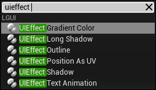
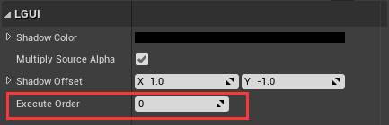
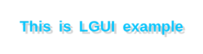
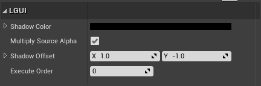
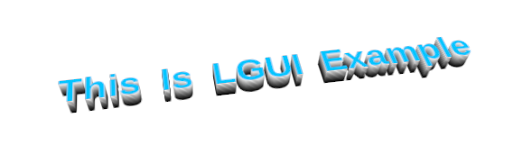
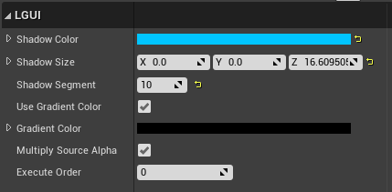
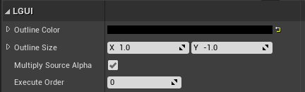
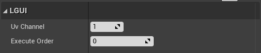
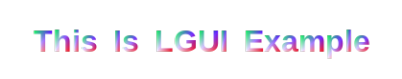
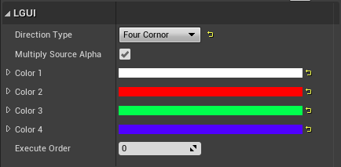

UIEffect
Select UIRenderable actor(UIText, UISprite, UITexture), add one of these components:
UIEffect Shadow, UIEffect Long Shadow, UIEffect Outline, UIEffect Position As UV, UIEffect Gradient Color:

Execute Order
Every UIEffect component have Execute Order property, this defines the effect execute order when there is multiple UIEffect component in same actor. Lower Execute Order will affect earlier than higher one. 
1. Shadow
The Shadow component adds a simple outline effect to UIRenderable components such as UIText/UISprite/UITexture. It must be on a actor which have a UIRenderable component.  
| Property: | Function: |
|---|---|
| Shadow Color | The color of the shadow. |
| Multiply Source Alpha | Multiplies the alpha of the UIRenderable onto the alpha of the effect. |
| Shadow Offset | The offset of the shadow expressed as a vector. |
2. Long Shadow
The Long Shadow component is like Shadow, but give us more control parameters, we can make very smooth shadow, or make it look thickness.  
| Property: | Function: |
|---|---|
| Shadow Color | The begin color of the shadow. |
| Shadow Size | The offset of the shadow expressed as a vector. |
| Shadow Segment | More segment will render more smooth shadow, but need more cost. |
| Use Gradient Color | Use Gradient Color to affect the shadow. |
| Gradient Color | Consider this is the end color of the shadow. |
| Multiply Source Alpha | Multiplies the alpha of the UIRenderable onto the alpha of the effect. |
3. Outline
The Outline component adds a simple outline effect to UIRenderable components such as UIText/UISprite/UITexture. It must be on a actor which have a UIRenderable component. 
| Property: | Function: |
|---|---|
| Outline Color | The color of the outline. |
| Outline Size | The distance of the outline effect horizontally and vertically. |
| Multiply Source Alpha | Multiplies the alpha of the UIRenderable onto the alpha of the effect. |
4. Position As UV
This will modify selected uv channel, and use position.xy as uv data. 
5. Gradient Color
The Gradient Color component can change UIRenderable's color to 2 or four different colors.  
| Property: | Function: |
|---|---|
| Direction Type | Gradient direction type, the options are Bottom to Top and *Top to Bottom" and "Left to Right" and "Right to Left" and "Four Cornor". |
| Multiply Source Alpha | Multiplies the alpha of the UIRenderable onto the alpha of the effect. |
| Color 1/2/3/4 | If Direction Type is set to Four Cornot" then four color will be used as four cornor color, otherwise only *Color 1 and Color 2 is used for two color. |